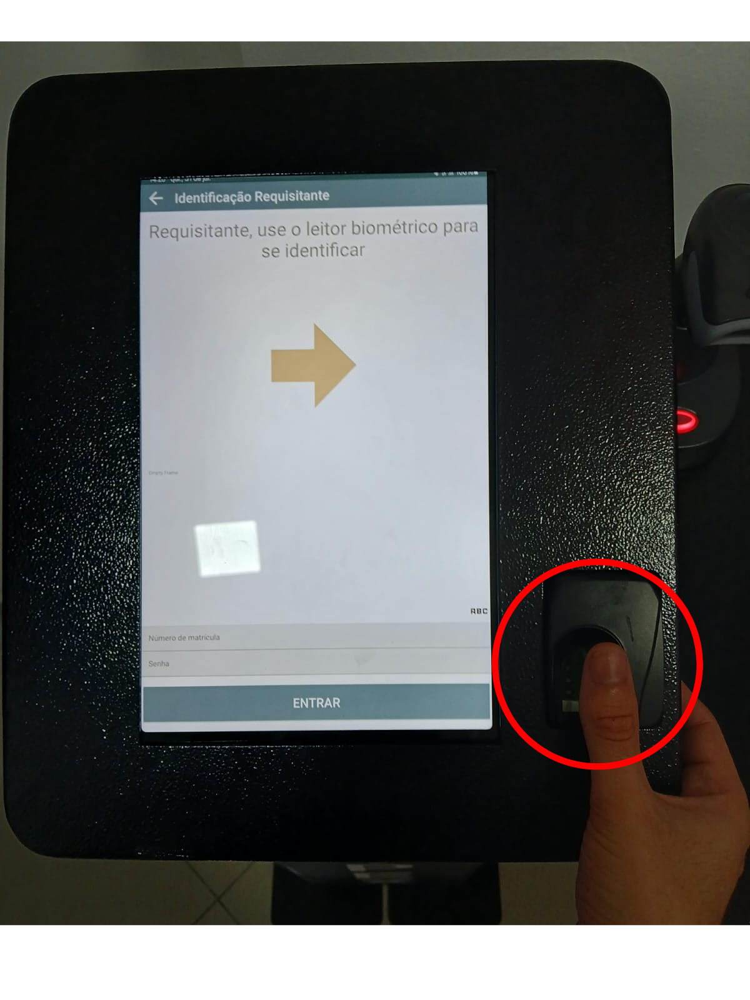
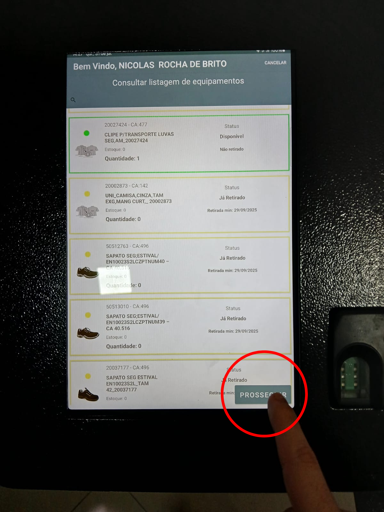

Passo 1:
Clique em "Fazer Requisição" na parte superior do tablet.

Passo 2:
Coloque seu dedo cadastrado no sensor de digital para acessar a sua ficha.
Passo 3:
Apenas verifique se o EPI desejado está na sua ficha e de acordo com as regras. Caso tudo esteje certo, basta clicar em "Prosseguir".
Passo 4:
Mire o leitor no QRcode do item desejado e aperte o gatilho do leitor. Após ouvir um "Bip", vá até o tablet conferir

Passo 5:
Confira se está tudo certo, se o EPI pertence à sua ficha e então clique em "Prosseguir". Caso não queira seguir com a requisição, basta clicar em "Cancelar".

Passo 6:
Agora é só clicar em "Finalizar" e tudo pronto. Cuide bem do seu EPI e tenha um ótimo trabalho!

Veja o vídeo demonstrativo:
Viu como é fácil?
Nossa missão é garantir sua segurança para que possamos ter sempre razões para brindar🍻